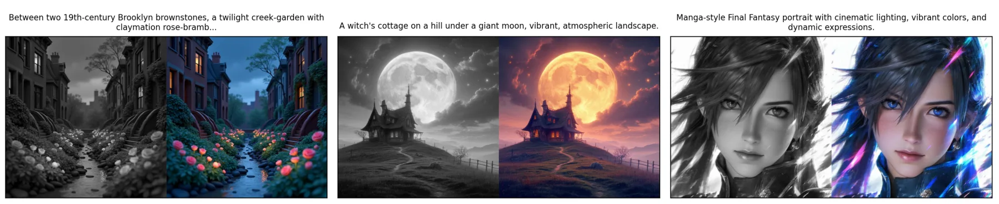
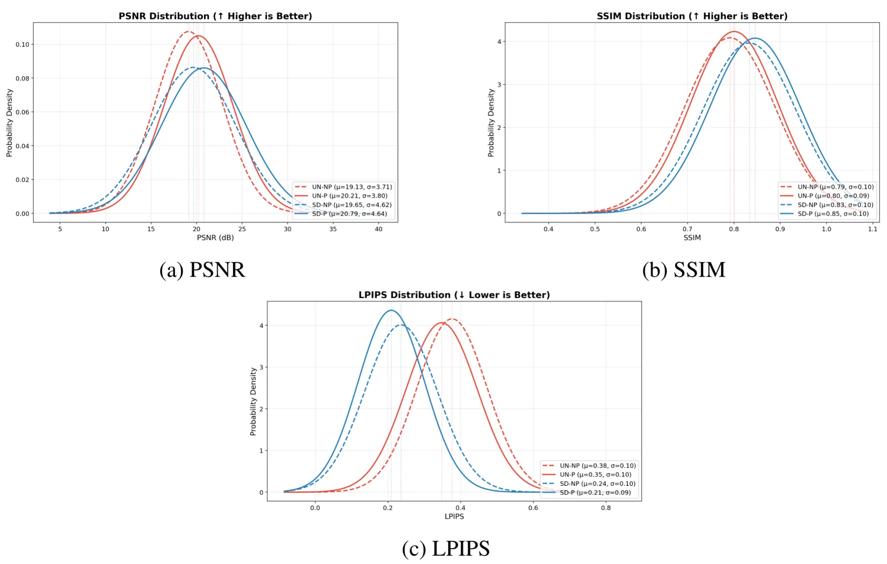
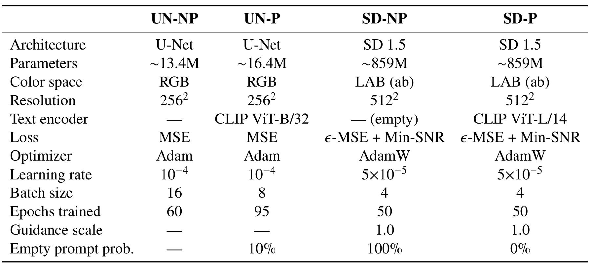

多模态图像上色：量化文本条件引导对灰度到彩色翻译的影响Multimodal Image Colorization: Quantifying the Impact of Text-Conditioned Guidance on Grayscale-to-Color Translation
计算机视觉方向基础应用，和三维重建/SLAM 主线较远；可作为文本条件对低层视觉任务影响的参考。
一句话工作总结
通过控制变量实验表明 CLIP 文本条件能稳定改善灰度图上色的像素指标和感知指标。
摘要
灰度图上色常见于历史影像修复、医学成像和艺术媒介，但同一灰度输入对应多种合理颜色。本文控制变量比较 U-Net 与 Stable Diffusion 1.5 两类架构在有/无 CLIP 文本条件时的指标差异。结果显示文本条件在 U-Net 层面提升 PSNR 5.6%、SSIM 1.2%、colorfulness 36.6%，LPIPS 降低 7.6%；在 Stable Diffusion 层面提升 PSNR 5.8%、SSIM 1.5%，LPIPS 降低 11.3%。
Grayscale images are commonly found in historical photography restoration, medical imaging, and artistic media. However, automatically applying color to these images remains a significant challenge in computer vision because many plausible colorizations can correspond to the same grayscale input. In this work, we quantify the effect of text conditioning on pixel-level and perceptual metrics for grayscale-to-color image models. Specifically, we compare two architectures, a U-Net and Stable Diffusion 1.5, each tested with and without CLIP text conditioning while holding all other variables constant. Our results show that text conditioning improves PSNR by 5.6%, SSIM by 1.2%, and colorfulness by 36.6%, while reducing LPIPS by 7.6% in the U-Net tier. In the Stable Diffusion tier, text conditioning improves PSNR by 5.8%, SSIM by 1.5%, and colorfulness by 0.6%, while reducing LPIPS by 11.3%. These results indicate that text conditioning provides consistent, measurable improvements to colorization quality across both architecture scales.
中文解读摘录
- 英文题名：Scene-Level Heterogeneous Physics Simulation with 3D Gaussian Splats
- 作者：Xiaoyang Liu, Shangzhe Wu, Kai Han
- 类别/来源：cs.GR, cs.AI, cs.CV；rss:cs.GR；采集 score=12；阅读优先级=9.2/10。
- 一句话总结：把 3DGS、网格和流体统一抽象为物理粒子，使捕获场景中的高斯资产能够参与真实交互和非刚体变形。
- 为什么值得看：与 3DGS 场景表示、交互式三维资产和机器人仿真高度相关；亮点在于从渲染表示跨到统一物理表示。需后续确认开源计划、运行成本和复杂真实场景鲁棒性。
- 标签：3DGS、物理仿真、场景级交互、非刚体变形
- 链接：abs / PDF
图表/页面预览
{kind=link}

{kind=link}

{kind=link}
